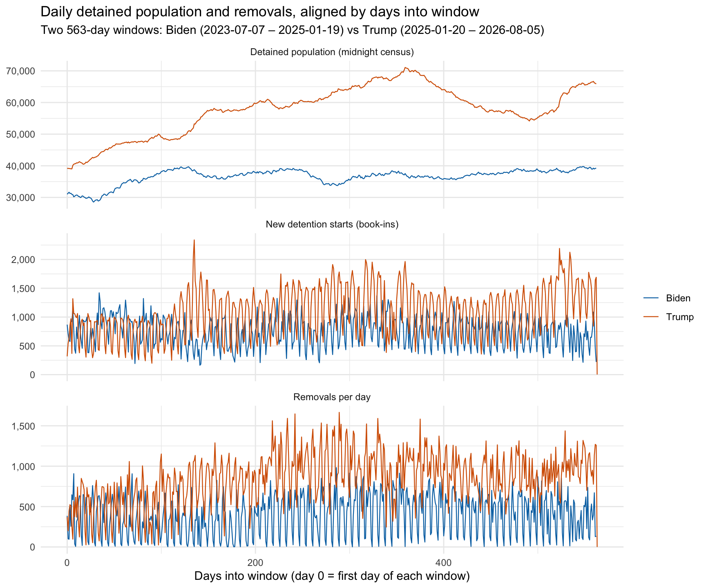
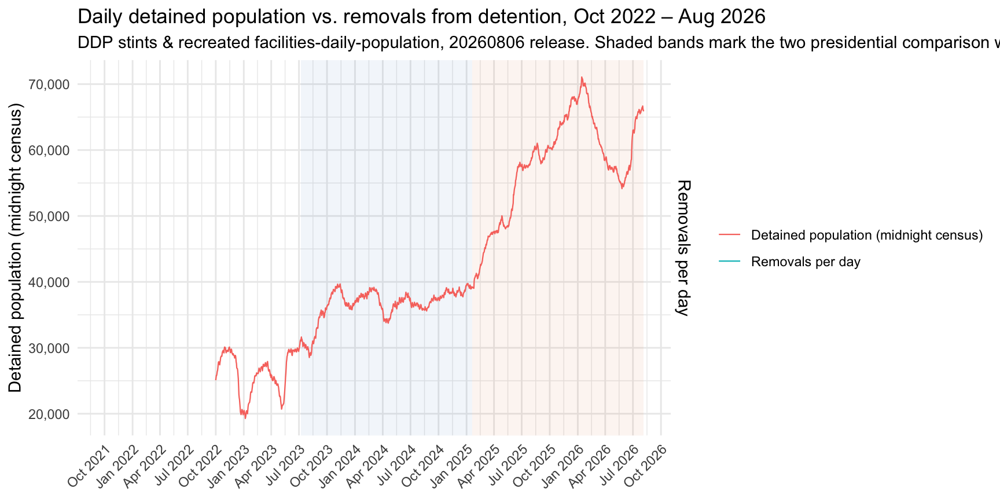
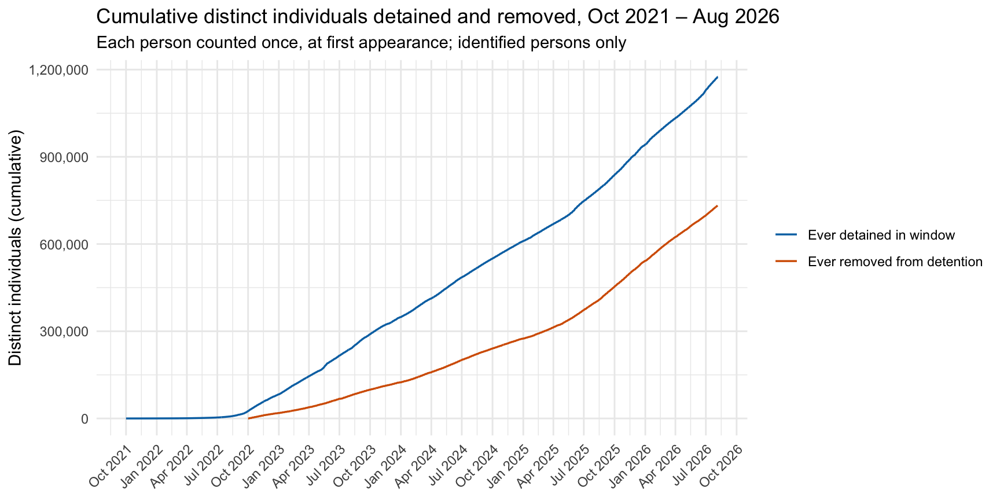
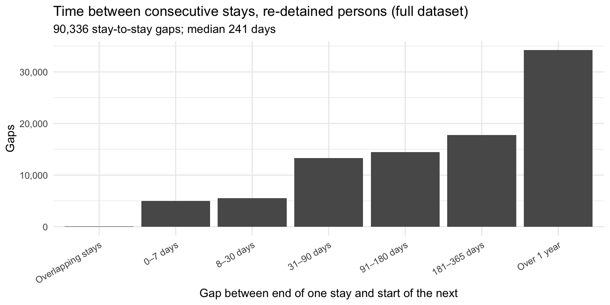

Detention throughput: daily population, removals, and re-detention
Person-level analysis of the DDP detention stints (20260806 release), with presidential comparison windows
Published
October 3, 2026
Overview
This report uses the Deportation Data Project (DDP) individual-level detention stints (data/ddp/detention-stints-latest_20260806.parquet, 3.2M stints, book-outs 2022-10-01 through 2026-08-06) to measure detention throughput:
Daily population vs. daily removals — the national detained population (midnight census, from the recreated facilities-daily-population-latest_20260806.parquet) plotted against the number of people removed from detention each day.
Cumulative distinct individuals — how many distinct people have ever appeared in the data as detained, and how many have been removed, cumulatively over time.
Double detentions — persons with two or more separate stays (consecutive stints caused by transfers within one stay do not count).
Double removals — persons removed from detention two or more times.
Presidential comparison — every analysis is also run for two equal-length windows: from the second Trump inauguration (January 20, 2025) to the end of the data, and the same number of days immediately before it.
Definitions and caveats. A stay is one continuous detention episode; a stint is one facility segment within a stay (transfers create stints). A removal is a stint whose detention_release_reason is “Removed” — exactly one such stint exists per removed stay, so removal counts are per-person events. Removals here are removals from detention: people removed by ICE without a detention stint in this dataset are invisible (DDP’s separate removals dataset covers enforcement actions). Person-level counts exclude the 10,918 stints whose unique_identifier (and stay_ID) is missing. The dataset is left-truncated at book-outs from 2022-10-01, so cumulative counts only cover this window; DDP also retroactively revises records between releases.
ggplot(align_long, aes(days_in, value, color = president)) +geom_line(linewidth =0.4) +facet_wrap(~ metric, ncol =1, scales ="free_y") +scale_color_manual(values =c(Biden ="#0072B2", Trump ="#D55E00")) +scale_y_continuous(labels = comma) +labs(title ="Daily detained population and removals, aligned by days into window",subtitle =paste0("Two ", scales::comma(n_window_days),"-day windows: Biden (", format(biden_start), " – ", format(inaug -1),") vs Trump (", format(inaug), " – ", format(window_end), ")"),x ="Days into window (day 0 = first day of each window)",y =NULL,color =NULL ) +theme_minimal()
Warning: Removed 1 row containing missing values or values outside the scale range
(`geom_line()`).

The aligned series make the shift visible. The Trump window opens with the population at roughly the level the Biden window ended on — the post-2024-election surge had already begun before January 20 — and then climbs steeply to roughly double the Biden window’s mean. Daily removals in the Trump window average 840 per day versus 401 under Biden, and the two windows’ daily removal maxima are 1,666 vs 982.
The book-ins series separates the surge into its two components: arrivals and hold length. New detention starts average 755 per day in the Biden window versus 1,094 under Trump — a 45% rise — while the mean population rises NA%. So most of the population increase reflects more people coming in. By Little’s law (mean population ÷ mean daily book-ins — a rough steady-state approximation, since both windows have growing populations), the implied average stay lengthens from about 48.5 days to about NA days — a modest contribution from people being held longer. The pre-inauguration composition is telling: in the eleven weeks before January 20, book-ins averaged just 679 per day — below the Biden-window average even as the population climbed — so the growth before the inauguration was already hold-lengthening, and the arrival surge came with the new administration.
Two caveats: administration windows are a crude proxy for policy (the Biden window’s final months already reflect the post-election surge), and the DDP data captures removals from detention only.
Daily population vs. daily removals
ggplot(combined, aes(date)) +annotate("rect", xmin = biden_start, xmax = inaug -1,ymin =-Inf, ymax =Inf, fill ="#0072B2", alpha =0.06) +annotate("rect", xmin = inaug, xmax = window_end,ymin =-Inf, ymax =Inf, fill ="#D55E00", alpha =0.06) +geom_line(aes(y = pop_midnight, color ="Detained population (midnight census)"), linewidth =0.4) +geom_line(aes(y = removals * scale_factor, color ="Removals per day"), linewidth =0.4) +scale_y_continuous(labels = comma,sec.axis =sec_axis(~ . / scale_factor, name ="Removals per day", labels = comma) ) +scale_x_date(date_breaks ="3 months", date_labels ="%b %Y") +labs(title ="Daily detained population vs. removals from detention, Oct 2022 – Aug 2026",subtitle =paste0("DDP stints & recreated facilities-daily-population, 20260806 release. ","Shaded bands mark the two presidential comparison windows. ",comma(sum(removals_daily$removals)), " removals from detention total" ),x =NULL,y ="Detained population (midnight census)",color =NULL ) +theme_minimal() +theme(axis.text.x =element_text(angle =45, hjust =1))
Warning in min(x): no non-missing arguments to min; returning Inf
Warning in max(x): no non-missing arguments to max; returning -Inf
Warning: Removed 335 rows containing missing values or values outside the scale range
(`geom_line()`).
Warning: Removed 1740 rows containing missing values or values outside the scale range
(`geom_line()`).

knitr::kable( daily_window_tab,col.names =c("Window", "Days", "Mean population", "Max population","Date of max population", "Total removals", "Mean removals/day","Max removals", "Date of max removals", "Total book-ins","Mean book-ins/day"),format.args =list(big.mark =","))
Window
Days
Mean population
Max population
Date of max population
Total removals
Mean removals/day
Max removals
Date of max removals
Total book-ins
Mean book-ins/day
Full dataset (2022-10-01 – 2026-08-05)
1,740
NA
NA
2026-01-14
768,357
442
1,666
2025-11-05
1,264,756
727
Biden (2023-07-07 – 2025-01-19)
563
36,601
39,766
2025-01-05
225,719
401
982
2024-04-18
425,308
755
Trump (2025-01-20 – 2026-08-05)
564
NA
NA
2026-01-14
473,897
840
1,666
2025-11-05
616,825
1,094
Over the full window, removals run at a median of 535 per day against a population that grows from roughly 35,000 (Oct 2022) to a peak of NA (2026-01-14, midnight census). Both comparison windows tell a sharper story: mean daily population is 36,601 in the Biden window versus NA in the Trump window (+58%), while total removals are 225,719 versus 473,897 — the post-inauguration window removes just over twice as many people from detention in the same number of days. Expressed as throughput, daily removals rise from about 1.1% to about NA% of the standing population per day.
The midnight census is used for population because n_detained (booked counts) double-counts people held at two facilities on a transfer day; the same caveat applies to removals — a removal is one event per stay, so the removal series has no transfer inflation.
Cumulative distinct individuals
ggplot() +geom_line(data = cum_detained,aes(date, cum_persons, color ="Ever detained in window"), linewidth =0.6) +geom_line(data = cum_removed,aes(date, cum_persons, color ="Ever removed from detention"), linewidth =0.6) +scale_y_continuous(labels = comma) +scale_x_date(date_breaks ="3 months", date_labels ="%b %Y") +scale_color_manual(values =c("#0072B2", "#D55E00")) +labs(title ="Cumulative distinct individuals detained and removed, Oct 2021 – Aug 2026",subtitle ="Each person counted once, at first appearance; identified persons only",x =NULL,y ="Distinct individuals (cumulative)",color =NULL ) +theme_minimal() +theme(axis.text.x =element_text(angle =45, hjust =1))

cum_long <-bind_rows( biden_cum$detained |>mutate(president ="Biden", measure ="Detained in window",days_in =as.integer(date - biden_start)), biden_cum$removed |>mutate(president ="Biden", measure ="Removed in window",days_in =as.integer(date - biden_start)), trump_cum$detained |>mutate(president ="Trump", measure ="Detained in window",days_in =as.integer(date - inaug)), trump_cum$removed |>mutate(president ="Trump", measure ="Removed in window",days_in =as.integer(date - inaug)))ggplot(cum_long, aes(days_in, cum_persons, color = president, linetype = measure)) +geom_line(linewidth =0.6) +scale_color_manual(values =c(Biden ="#0072B2", Trump ="#D55E00")) +scale_y_continuous(labels = comma) +labs(title ="Cumulative distinct individuals detained and removed, by presidential window",subtitle ="Persons counted at first in-window appearance; both windows are 563 days",x ="Days into window",y ="Distinct individuals (cumulative)",color =NULL,linetype =NULL ) +theme_minimal()
By the end of the data window, 1,174,420 distinct individuals appear in the detention data, of whom 732,608 (62.4%) have been removed from detention at least once. The full-window curves are cumulative over the data window only — book-outs in this file begin 2022-10-01, so anyone detained and released before that date is absent, and first appearances reach back only to Oct 2021 via long-running open stints.
Within the presidential windows, the difference is proportionally even larger than the daily plots suggest: 591,434 distinct people were booked into detention during the Trump window versus 410,493 during the Biden window — the post-inauguration period processes nearly 45% more individuals through detention in the same number of days, on top of a much larger standing population. The widening gap between each window’s detained and removed curves is the stock of people detained in the window who have not (yet) been removed — those still in detention, and those released by other means (parole, bond, transfer to another agency, voluntary departure).
Double detentions (separate stays)
A double detention is defined as two or more distinct stays for the same person — transfer-driven consecutive stints within one stay are excluded by construction, since they share a stay_ID.
82,496 persons (7% of everyone detained in the window) were detained in two or more separate stays. The upper tail is long but thin: the most-frequently detained person in the data has 8 stays.
knitr::kable( det_window_tab,col.names =c("Window", "Stays started", "Persons detained", "Persons re-detained","% re-detained", "Median gap between stays (days)"),format.args =list(big.mark =","))
Window
Stays started
Persons detained
Persons re-detained
% re-detained
Median gap between stays (days)
Full dataset (2022-10-01 – 2026-08-05)
1,264,756
1,174,420
82,496
7.0
241
Biden (2023-07-07 – 2025-01-19)
425,308
410,493
13,977
3.4
93
Trump (2025-01-20 – 2026-08-05)
616,823
591,434
24,274
4.1
93
The full-dataset re-detention share is partly a function of observation length — the longer the window, the more opportunity to return. In the equal-length presidential windows the shares are much closer than the headline 7%: 3.4% under Biden versus 4.1% under Trump. Re-detention is usually not immediate in either window (median gap between consecutive stays 93 days under Biden, 93 under Trump — both shorter than the full-window median of 241 days, which is inflated by gaps spanning the whole multi-year dataset). In both windows, several thousand people were removed and then detained again within the same window, matching the double-removal pattern below.
ggplot(gap_cats, aes(category, gaps)) +geom_col() +scale_y_continuous(labels = comma) +labs(title ="Time between consecutive stays, re-detained persons (full dataset)",subtitle =paste0(comma(gap_summary$gaps), " stay-to-stay gaps; median ",comma(gap_summary$median_gap), " days"),x ="Gap between end of one stay and start of the next",y ="Gaps" ) +theme_minimal() +theme(axis.text.x =element_text(angle =30, hjust =1))

Only 11.7% of full-dataset gaps close within 30 days. The 54 “overlapping” gaps (next stay starting before the recorded end of the previous one) are data artifacts — most plausibly stays whose book_out_date_time was never closed out — rather than genuinely simultaneous stays, though a same-day release-and-rebooking cannot be ruled out in individual cases.
Among re-detained persons, 35,252 had at least one removal before a later stay began — removed from the country (or at least out of ICE detention), then detained again within the window.
Double removals do exist: over the full dataset, 32,242 persons (4.4% of everyone removed in the window) were removed from detention two or more times, and one person appears 7 times. The presidential windows show the phenomenon at comparable intensity once scale is taken into account: 7,876 persons were removed twice within the 563-day Biden window versus 9,077 within the Trump window — but the Trump window removes 114% more people overall, so the rate of repeat removals is actually lower (2.0% of persons removed vs 3.6%). In a FOIA snapshot with anonymized identifiers, some of these are plausibly the same individual genuinely removed and re-detained after re-entry — the gap analysis above shows re-detention is overwhelmingly a months-apart phenomenon, consistent with that reading — but identifier collisions in the unique_identifier field would produce the same signature, so the true rate is likely somewhat lower than the raw count.
Data notes
Source: the stints_file pipeline target (data/ddp/detention-stints-latest_20260806.parquet; see data/ddp-detention-stints.yml) and facilities_daily_population_file (data/ddp/facilities-daily-population-latest_20260806.parquet; see data/ddp-daily-population.yml), both read via tar_read().
Presidential windows: the Trump window runs from the second inauguration (2025-01-20) to the end of the population data (2026-08-05, 563 days); the Biden window is the same number of days immediately before it (2023-07-07 – 2025-01-19). Window totals do not sum to full-dataset totals because the earlier period (Oct 2022 – Jul 2023) belongs to neither window.
Person-level analysis excludes 10,918 stints missing unique_identifier (the same rows also lack stay_ID).
Removal dates use the stint book_out_date_time; departed_date agrees with it on 94% of removed stints (mean lag ≈ 0 days).
Book-ins count new detention starts: one per identified stay, at the stay’s start date. The 10,918 unidentifiable stints are excluded from book-ins but included in the population and removal series — a difference of well under 1%.
Window-level re-detention and double-removal counts use only stays/removals starting or occurring within the window; events straddling the window edges fall to whichever window contains the stay start or removal date.
Overlapping stays (gap < 0) are reported as a category rather than dropped, so the re-detention numbers are not silently inflated or deflated by them.
Related files: R/ddp-daily-population.R (population recreation), ddp-parquet-summary.qmd (dataset summaries), agent/conversation-ddp-update-20261003.md (the update that established the 20260806 pipeline state).